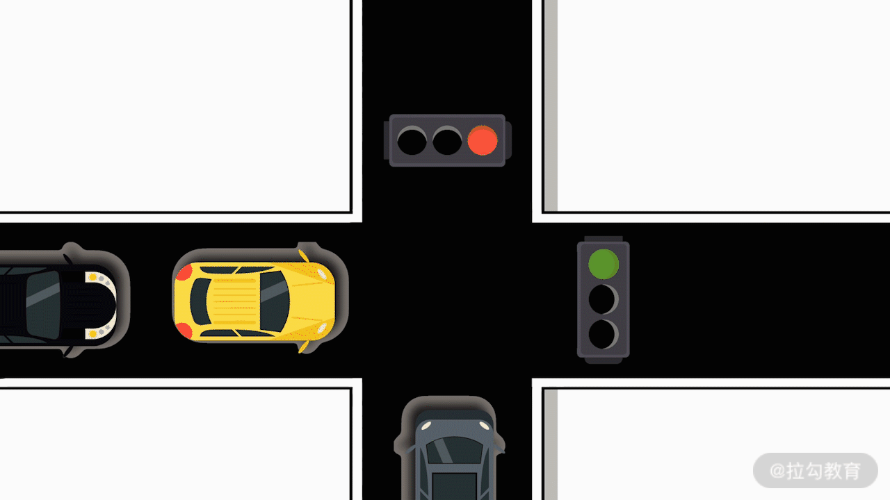

- 00 数据结构与算法，应该这样学！.md.html
- 01 复杂度：如何衡量程序运行的效率？.md.html
- 02 数据结构：将“昂贵”的时间复杂度转换成“廉价”的空间复杂度.md.html
- 03 增删查：掌握数据处理的基本操作,以不变应万变.md.html
- 04 如何完成线性表结构下的增删查？.md.html
- 05 栈：后进先出的线性表，如何实现增删查？.md.html
- 06 队列：先进先出的线性表，如何实现增删查？.md.html
- 07 数组：如何实现基于索引的查找？.md.html
- 08 字符串：如何正确回答面试中高频考察的字符串匹配算法？.md.html
- 09 树和二叉树：分支关系与层次结构下，如何有效实现增删查？.md.html
- 10 哈希表：如何利用好高效率查找的“利器”？.md.html
- 11 递归：如何利用递归求解汉诺塔问题？.md.html
- 12 分治：如何利用分治法完成数据查找？.md.html
- 13 排序：经典排序算法原理解析与优劣对比.md.html
- 14 动态规划：如何通过最优子结构，完成复杂问题求解？.md.html
- 15 定位问题才能更好地解决问题：开发前的复杂度分析与技术选型.md.html
- 16 真题案例（一）：算法思维训练.md.html
- 17 真题案例（二）：数据结构训练.md.html
- 18 真题案例（三）：力扣真题训练.md.html
- 19 真题案例（四）：大厂真题实战演练.md.html
- 20 代码之外，技术面试中你应该具备哪些软素质？.md.html
- 21 面试中如何建立全局观，快速完成优质的手写代码？.md.html
- 加餐 课后练习题详解.md.html
02 数据结构：将“昂贵”的时间复杂度转换成“廉价”的空间复杂度
上一节课，我们讲了衡量代码效率的方法。相信通过前面的学习，拿到一段代码，你已经能够衡量出代码效率的高低，那么，针对这些低效代码，你知道如何提高它们的效率吗？接下来我们来一起看一下数据结构对于时间复杂度和空间复杂度之间转换的内容，以帮助你掌握提高代码效率方法。
你面试的过程中，常常会遇到考察手写代码的场景，通常面试官会追问：“这段代码的时间复杂度或者空间复杂度，是否还有降低的可能性？”如果没有经过专门的学习或训练，应聘者只能在各种漫无目的的尝试中去寻找答案。
别忘了，代码效率优化就是要将可行解提高到更优解，最终目标是：要采用尽可能低的时间复杂度和空间复杂度，去完成一段代码的开发。
你可能会困惑，优化代码需要积累非常多的实际经验，初学者通常很难找到最优的编码解决方案。其实，代码效率的提高也是有其核心思路的。掌握了下面所讲的核心思路后，对于绝大多数的编码任务，你都能找到最优或者逼近最优的编码方式。
时间昂贵、空间廉价
一段代码会消耗计算时间、资源空间，从而产生时间复杂度和空间复杂度，那么你是否尝试过将时间复杂度和空间复杂进行下对比呢？其实对比过后，你就会发现一个重要的现象。
假设一段代码经过优化后，虽然降低了时间复杂度，但依然需要消耗非常高的空间复杂度。 例如，对于固定数据量的输入，这段代码需要消耗几十 G 的内存空间，很显然普通计算机根本无法完成这样的计算。如果一定要解决的话，一个最简单粗暴的办法就是，购买大量的高性能计算机，来弥补空间性能的不足。
反过来，假设一段代码经过优化后，依然需要消耗非常高的时间复杂度。 例如，对于固定数据量的输入，这段代码需要消耗 1 年的时间去完成计算。如果在跑程序的 1 年时间内，出现了断电、断网或者程序抛出异常等预期范围之外的问题，那很可能造成 1 年时间浪费的惨重后果。很显然，用 1 年的时间去跑一段代码，对开发者和运维者而言都是极不友好的。
这告诉我们一个什么样的现实问题呢？代码效率的瓶颈可能发生在时间或者空间两个方面。如果是缺少计算空间，花钱买服务器就可以了。这是个花钱就能解决的问题。相反，如果是缺少计算时间，只能投入宝贵的人生去跑程序。即使你有再多的钱、再多的服务器，也是毫无用处。相比于空间复杂度，时间复杂度的降低就显得更加重要了。因此，你会发现这样的结论：空间是廉价的，而时间是昂贵的。
数据结构连接时空
假定在不限制时间、也不限制空间的情况下，你可以完成某个任务的代码的开发。这就是通常我们所说的暴力解法，更是程序优化的起点。
例如，如果要在 100 以内的正整数中，找到同时满足以下两个条件的最小数字：
- 能被 3 整除；
- 除 5 余 2。
最暴力的解法就是，从 1 开始到 100，每个数字都做一次判断。如果这个数字满足了上述两个条件，则返回结果。这是一种不计较任何时间复杂度或空间复杂度的、最直观的暴力解法。
当你有了最暴力的解法后，就需要用上一讲的方法评估当前暴力解法的复杂度了。如果复杂度比较低或者可以接受，那自然万事大吉。可如果暴力解法复杂度比较高的话，那就要考虑采用程序优化的方法去降低复杂度了。
为了降低复杂度，一个直观的思路是：梳理程序，看其流程中是否有无效的计算或者无效的存储。
我们需要从时间复杂度和空间复杂度两个维度来考虑。常用的降低时间复杂度的方法有递归、二分法、排序算法、动态规划等，这些知识我们都会在后续课程中逐一学习，这里我先不讲。而降低空间复杂度的方法，就要围绕数据结构做文章了。
降低空间复杂度的核心思路就是，能用低复杂度的数据结构能解决问题，就千万不要用高复杂度的数据结构。
经过了前面剔除无效计算和存储的处理之后，如果程序在时间和空间等方面的性能依然还有瓶颈，又该怎么办呢？前面我们提到过，空间是廉价的，最不济也是可以通过购买更高性能的计算机进行解决的。然而时间是昂贵的，如果无法降低时间复杂度，那系统的效率就永远无法得到提高。
这时候，开发者们想到这样的一个解决思路。如果可以通过某种方式，把时间复杂度转移到空间复杂度的话，就可以把无价的东西变成有价了。这种时空转移的思想，在实际生活中也会经常遇到。
例如，马路上的十字路口，所有车辆在通过红绿灯时需要分批次通行。这样，就消耗了所有车辆的通行时间。如果要降低这里的时间损耗，人们就想到了修建立交桥。修建立交桥后，每个可能的转弯或直行的行进路线，都有专属的一条公路支持。这样，车辆就不需要全部去等待红绿灯分批通行了。最终，实现了用空间换取时间。

其实，程序开发也是可以借鉴这里的思想的。在程序开发中，连接时间和空间的桥梁就是数据结构。对于一个开发任务，如果你能找到一种高效的数据组织方式，采用合理的数据结构的话，那就可以实现时间复杂度的再次降低。同样的，这通常会增加数据的存储量，也就是增加了空间复杂度。
以上就是程序优化的最核心的思路，也是这个专栏的整体框架。我们简单梳理如下：
- 第一步，暴力解法。在没有任何时间、空间约束下，完成代码任务的开发。
- 第二步，无效操作处理。将代码中的无效计算、无效存储剔除，降低时间或空间复杂度。
- 第三步，时空转换。设计合理数据结构，完成时间复杂度向空间复杂度的转移。
降低复杂度的案例
有了如上的方法论，我们给出几个例子，帮助你加深理解。
第 1 个例子，假设有任意多张面额为 2 元、3 元、7 元的货币，现要用它们凑出 100 元，求总共有多少种可能性。假设工程师小明写了下面的代码：
public void s2_1() {
int count = 0;
for (int i = 0; i <= (100 / 7); i++) {
for (int j = 0; j <= (100 / 3); j++) {
for (int k = 0; k <= (100 / 2); k++) {
if (i * 7 + j * 3 + k * 2 == 100) {
count += 1;
}
}
}
}
System.out.println(count);
}`
在这段代码中，使用了 3 层的 for 循环。从结构上来看，是很显然的 O( n³ ) 的时间复杂度。然而，仔细观察就会发现，代码中最内层的 for 循环是多余的。因为，当你确定了要用 i 张 7 元和 j 张 3 元时，只需要判断用有限个 2 元能否凑出 100 - 7* i - 3* j 元就可以了。因此，代码改写如下：
public void s2_2() {
int count = 0;
for (int i = 0; i <= (100 / 7); i++) {
for (int j = 0; j <= (100 / 3); j++) {
if ((100-i*7-j*3 >= 0)&&((100-i*7-j*3) % 2 == 0)) {
count += 1;
}
}
}
System.out.println(count);
}
经过改造后，代码的结构由 3 层 for 循环，变成了 2 层 for 循环。很显然，时间复杂度就变成了O(n²) 。这样的代码改造，就是利用了方法论中的步骤二，将代码中的无效计算、无效存储剔除，降低时间或空间复杂度。
再看第二个例子。查找出一个数组中，出现次数最多的那个元素的数值。例如，输入数组 a = [1,2,3,4,5,5,6 ] 中，查找出现次数最多的数值。从数组中可以看出，只有 5 出现了 2 次，其余都是 1 次。显然 5 出现的次数最多，则输出 5。
工程师小明的解决方法是，采用两层的 for 循环完成计算。第一层循环，对数组每个元素遍历。第二层循环，则是对第一层遍历的数字，去遍历计算其出现的次数。这样，全局再同时缓存一个出现次数最多的元素及其次数就可以了。具体代码如下：
public void s2_3() {
int a[] = { 1, 2, 3, 4, 5, 5, 6 };
int val_max = -1;
int time_max = 0;
int time_tmp = 0;
for (int i = 0; i < a.length; i++) {
time_tmp = 0;
for (int j = 0; j < a.length; j++) {
if (a[i] == a[j]) {
time_tmp += 1;
}
if (time_tmp > time_max) {
time_max = time_tmp;
val_max = a[i];
}
}
}
System.out.println(val_max);
}
在这段代码中，小明采用了两层的 for 循环，很显然时间复杂度就是 O(n²)。而且代码中，几乎没有冗余的无效计算。如果还需要再去优化，就要考虑采用一些数据结构方面的手段，来把时间复杂度转移到空间复杂度了。
我们先想象一下，这个问题能否通过一次 for 循环就找到答案呢？一个直观的想法是，一次循环的过程中，我们同步记录下每个元素出现的次数。最后，再通过查找次数最大的元素，就得到了结果。
具体而言，定义一个 k-v 结构的字典，用来存放元素-出现次数的 k-v 关系。那么首先通过一次循环，将数组转变为元素-出现次数的一个字典。接下来，再去遍历一遍这个字典，找到出现次数最多的那个元素，就能找到最后的结果了。

具体代码如下：
public void s2_4() {
int a[] = { 1, 2, 3, 4, 5, 5, 6 };
Map<Integer, Integer> d = new HashMap<>();
for (int i = 0; i < a.length; i++) {
if (d.containsKey(a[i])) {
d.put(a[i], d.get(a[i]) + 1);
} else {
d.put(a[i], 1);
}
}
int val_max = -1;
int time_max = 0;
for (Integer key : d.keySet()) {
if (d.get(key) > time_max) {
time_max = d.get(key);
val_max = key;
}
}
System.out.println(val_max);
}
我们来计算下这种方法的时空复杂度。代码结构上，有两个 for 循环。不过，这两个循环不是嵌套关系，而是顺序执行关系。其中，第一个循环实现了数组转字典的过程，也就是 O(n) 的复杂度。第二个循环再次遍历字典找到出现次数最多的那个元素，也是一个 O(n) 的时间复杂度。
因此，总体的时间复杂度为 O(n) + O(n)，就是 O(2n)，根据复杂度与具体的常系数无关的原则，也就是O(n) 的复杂度。空间方面，由于定义了 k-v 字典，其字典元素的个数取决于输入数组元素的个数。因此，空间复杂度增加为 O(n)。
这段代码的开发，就是借鉴了方法论中的步骤三，通过采用更复杂、高效的数据结构，完成了时空转移，提高了空间复杂度，让时间复杂度再次降低。
总结
好的，这一节的内容就到这里了。这一节是这门课程的总纲，我们重点学习了程序开发中复杂度降低的核心方法论。很多初学者在面对程序卡死了、运行很久没有结果这样的问题时，都会显得束手无策。
其实，无论什么难题，降低复杂度的方法就是这三个步骤。只要你能深入理解这里的核心思想，就能把问题迎刃而解。
- 第一步，暴力解法。在没有任何时间、空间约束下，完成代码任务的开发。
- 第二步，无效操作处理。将代码中的无效计算、无效存储剔除，降低时间或空间复杂度。
- 第三步，时空转换。设计合理数据结构，完成时间复杂度向空间复杂度的转移。
既然说这是这门专栏的总纲，那么很显然后续的学习都是在这个总纲体系的框架中。第一步的暴力解法没有太多的套路，只要围绕你面临的问题出发，大胆发挥想象去尝试解决即可。第二步的无效操作处理中，你需要学会并掌握递归、二分法、排序算法、动态规划等常用的算法思维。第三步的时空转换，你需要对数据的操作进行细分，全面掌握常见数据结构的基础知识。再围绕问题，有针对性的设计数据结构、采用合理的算法思维，去不断完成时空转移，降低时间复杂度。
后续的课程，我们会围绕步骤二和步骤三的知识要点，逐一去深入讨论学习。
练习题
下面我们来看一道练习题。在下面这段代码中，如果要降低代码的执行时间，第 4 行需要做哪些改动呢？如果做出改动后，是否降低了时间复杂度呢？
public void s2_2() {
int count = 0;
for (int i = 0; i <= (100 / 7); i++) {
for (int j = 0; j <= (100 / 3); j++) {
if ((100-i*7-j*3 >= 0)&&((100-i*7-j*3) % 2 == 0)) {
count += 1;
}
}
}
System.out.println(count);
}
我们给出一些提示，第 4 行代码，j 需要遍历到 33。但很显然，随着 i 的变大，j 并不需要遍历到 33。例如，当 i 为 9 的时候，j 最大也只能取到 12。如果 j 大于 12，则 79 + 313 > 100。不过，别忘了，即使是这样，j 的取值范围也是与 n 线性相关的。哪怕是 O(n/2)，其实时间复杂度也并没有变小。